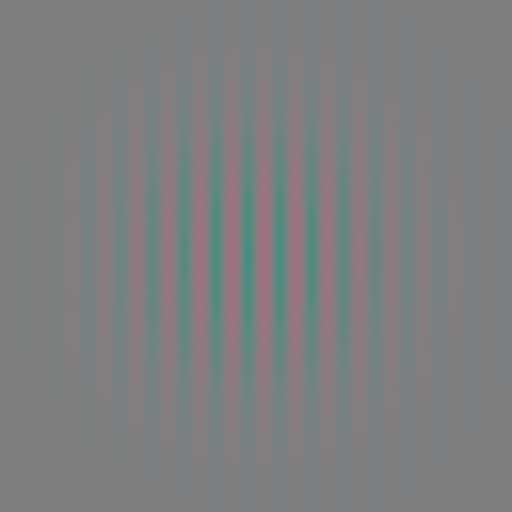
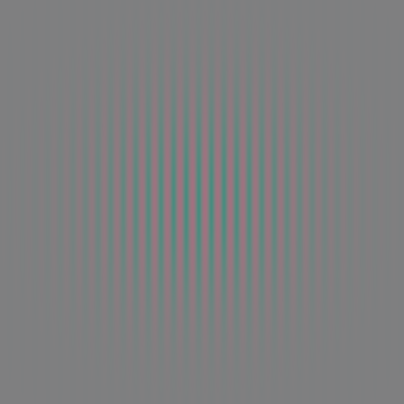
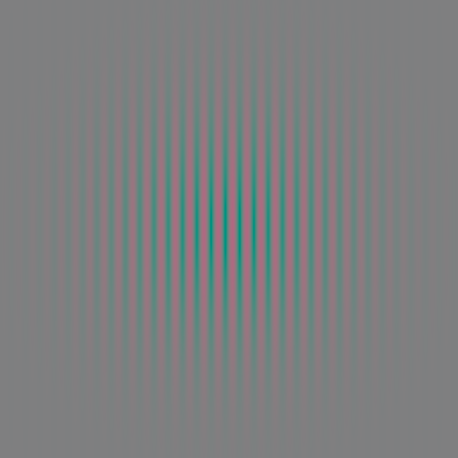

|
Contrast = 0.009999999776482582, Spatial Frequency = 0.5 |
Contrast = 0.009999999776482582, Spatial Frequency = 1.0 |
Contrast = 0.009999999776482582, Spatial Frequency = 2.0 |
Contrast = 0.009999999776482582, Spatial Frequency = 4.0 |
Contrast = 0.009999999776482582, Spatial Frequency = 8.0 |
Contrast = 0.009999999776482582, Spatial Frequency = 16.0 |
Contrast = 0.009999999776482582, Spatial Frequency = 32.0 |
|
Contrast = 0.015066301450133324, Spatial Frequency = 0.5 |
Contrast = 0.015066301450133324, Spatial Frequency = 1.0 |
Contrast = 0.015066301450133324, Spatial Frequency = 2.0 |
Contrast = 0.015066301450133324, Spatial Frequency = 4.0 |
Contrast = 0.015066301450133324, Spatial Frequency = 8.0 |
Contrast = 0.015066301450133324, Spatial Frequency = 16.0 |
Contrast = 0.015066301450133324, Spatial Frequency = 32.0 |
|
Contrast = 0.022699344903230667, Spatial Frequency = 0.5 |
Contrast = 0.022699344903230667, Spatial Frequency = 1.0 |
Contrast = 0.022699344903230667, Spatial Frequency = 2.0 |
Contrast = 0.022699344903230667, Spatial Frequency = 4.0 |
Contrast = 0.022699344903230667, Spatial Frequency = 8.0 |
Contrast = 0.022699344903230667, Spatial Frequency = 16.0 |
Contrast = 0.022699344903230667, Spatial Frequency = 32.0 |
|
Contrast = 0.03419951722025871, Spatial Frequency = 0.5 |
Contrast = 0.03419951722025871, Spatial Frequency = 1.0 |
Contrast = 0.03419951722025871, Spatial Frequency = 2.0 |
Contrast = 0.03419951722025871, Spatial Frequency = 4.0 |
Contrast = 0.03419951722025871, Spatial Frequency = 8.0 |
Contrast = 0.03419951722025871, Spatial Frequency = 16.0 |
Contrast = 0.03419951722025871, Spatial Frequency = 32.0 |
|
Contrast = 0.0515260249376297, Spatial Frequency = 0.5 |
Contrast = 0.0515260249376297, Spatial Frequency = 1.0 |
Contrast = 0.0515260249376297, Spatial Frequency = 2.0 |
Contrast = 0.0515260249376297, Spatial Frequency = 4.0 |
Contrast = 0.0515260249376297, Spatial Frequency = 8.0 |
Contrast = 0.0515260249376297, Spatial Frequency = 16.0 |
Contrast = 0.0515260249376297, Spatial Frequency = 32.0 |
|
Contrast = 0.0776306688785553, Spatial Frequency = 0.5 |
Contrast = 0.0776306688785553, Spatial Frequency = 1.0 |
Contrast = 0.0776306688785553, Spatial Frequency = 2.0 |
Contrast = 0.0776306688785553, Spatial Frequency = 4.0 |
Contrast = 0.0776306688785553, Spatial Frequency = 8.0 |
Contrast = 0.0776306688785553, Spatial Frequency = 16.0 |
Contrast = 0.0776306688785553, Spatial Frequency = 32.0 |
|
Contrast = 0.11696071177721024, Spatial Frequency = 0.5 |
Contrast = 0.11696071177721024, Spatial Frequency = 1.0 |
Contrast = 0.11696071177721024, Spatial Frequency = 2.0 |
Contrast = 0.11696071177721024, Spatial Frequency = 4.0 |
Contrast = 0.11696071177721024, Spatial Frequency = 8.0 |
Contrast = 0.11696071177721024, Spatial Frequency = 16.0 |
Contrast = 0.11696071177721024, Spatial Frequency = 32.0 |
|
Contrast = 0.17621654272079468, Spatial Frequency = 0.5 |
Contrast = 0.17621654272079468, Spatial Frequency = 1.0 |
 Contrast = 0.17621654272079468, Spatial Frequency = 2.0 |
 Contrast = 0.17621654272079468, Spatial Frequency = 4.0 |
Contrast = 0.17621654272079468, Spatial Frequency = 8.0 |
Contrast = 0.17621654272079468, Spatial Frequency = 16.0 |
Contrast = 0.17621654272079468, Spatial Frequency = 32.0 |
|
Contrast = 0.26549315452575684, Spatial Frequency = 0.5 |
Contrast = 0.26549315452575684, Spatial Frequency = 1.0 |
Contrast = 0.26549315452575684, Spatial Frequency = 2.0 |
 Contrast = 0.26549315452575684, Spatial Frequency = 4.0 |
Contrast = 0.26549315452575684, Spatial Frequency = 8.0 |
Contrast = 0.26549315452575684, Spatial Frequency = 16.0 |
Contrast = 0.26549315452575684, Spatial Frequency = 32.0 |
|
Contrast = 0.4000000059604645, Spatial Frequency = 0.5 |
Contrast = 0.4000000059604645, Spatial Frequency = 1.0 |
Contrast = 0.4000000059604645, Spatial Frequency = 2.0 |
Contrast = 0.4000000059604645, Spatial Frequency = 4.0 |
Contrast = 0.4000000059604645, Spatial Frequency = 8.0 |
Contrast = 0.4000000059604645, Spatial Frequency = 16.0 |
Contrast = 0.4000000059604645, Spatial Frequency = 32.0 |